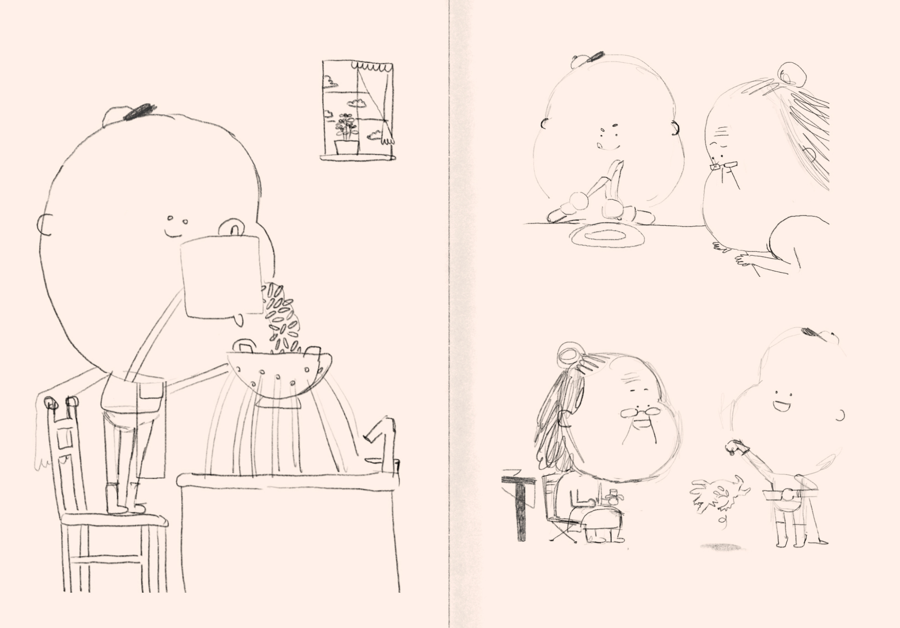
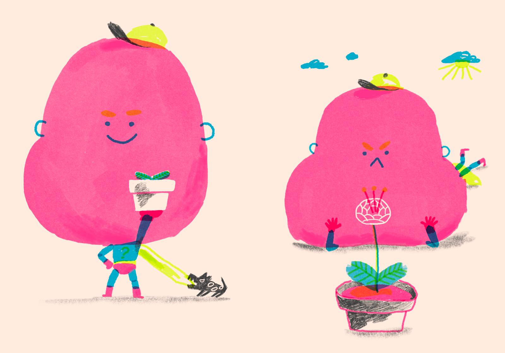
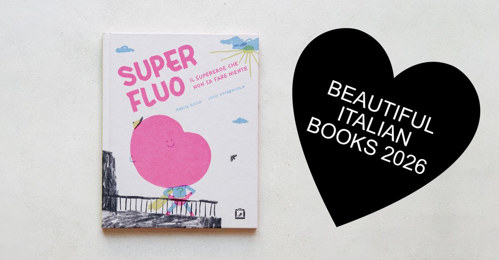
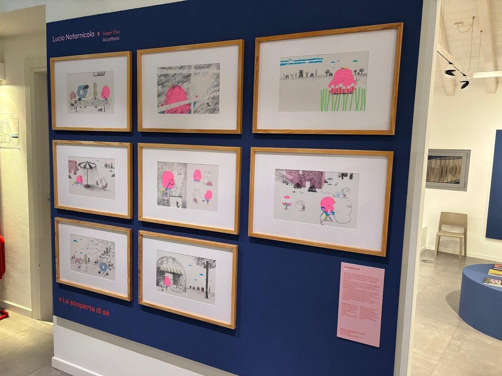

Com'è nato Super Fluo
L'idea di un supereroe completamente inutile, superfluo per l'appunto, nasce da un disegno di Lucio.

Albo illustrato
Il supereroe che non sa fare niente
Alcuni supereroi nascono baciati dalla fortuna, con capacità strabilianti. Poi c’è Super Fluo che invece non sa fare niente.
I supereroi non sono tutti uguali. C’è chi ritrova gli occhiali del papà, chi scalda il pranzo con un tocco e chi aggiusta tutto trasformando le mani in utensili. Con Super Fluo, però, è tutta un’altra storia. Lui è convinto di avere poteri straordinari: far crescere i fiori, spostare il Sole con lo yoga, far smettere di piovere dopo giorni di intensa concentrazione. Ma c’è una persona per cui Super Fluo è davvero un supereroe: la sua adorata Nonnina. Per lei trova il modo di far crescere i fiori, spostare il Sole, fermare la pioggia e soprattutto farla ridere di gusto.
Acquisto su Amazon. I collegamenti esterni si aprono in una nuova scheda.
Super Fluo è una storia sui superpoteri che non sembrano superpoteri. Quelli piccoli, quotidiani, quasi invisibili.
Super Fluo sogna grandi imprese, ma il suo talento più speciale nasce quando è accanto alla sua Nonnina: ascoltarla, aiutarla, farle compagnia, inventare modi per farla stare bene.
È un libro sull’attenzione e sull’empatia, su quello che possiamo fare per le persone che amiamo. Anche quando non sappiamo volare, sollevare palazzi o fermare davvero la pioggia.
L'idea di un supereroe completamente inutile, superfluo per l'appunto, nasce da un disegno di Lucio.

Le prime bozze di storyboard che sono diventate parte del libro a tutti gli effetti.

Appunti, idee e dettagli che non sono arrivati fino alla versione finale, ma fanno ancora parte della storia.

Super Fluo è stato selezionato per IBBY Italia Choice 2026 nella categoria Picture Books.
Selezione ufficiale (PDF)
Super Fluo è tra i libri selezionati da Beautiful Italian Books 2026.

Dal 7 novembre 2026 al 14 febbraio 2027
Le illustrazioni di Lucio Notarnicola per Super Fluo in mostra alla Fondazione Štěpán Zavřel, a Sarmede.
Scopri la mostraPresentazione di Super Fluo alla Libreria Sottobosco: un incontro per raccontare il libro e il suo mondo di superpoteri quotidiani.

Alfredo Paniconi racconta il libro attraverso la scrittura, le illustrazioni e la cura editoriale, soffermandosi sul passaggio dall'ironia alla tenerezza.
LeggiUna lettura che mette al centro l'autostima, l'empatia e il valore dei piccoli gesti di cura.
LeggiLa redazione de la Lettura consiglia Super Fluo nella rubrica «I consigli», raccontandone il protagonista e i suoi improbabili superpoteri.
LeggiUna puntata de I libri di Radio Kids, nella rassegna curata dalla rivista Andersen, dedicata a Super Fluo.
AscoltaSuper Fluo tra i consigli dei librai nella newsletter «Un inizio caleidoscopico».
Leggi